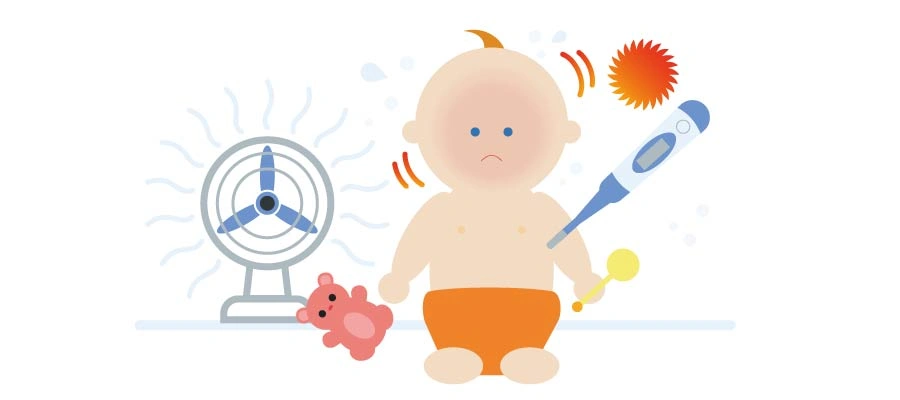

Pricipal salud del bebé
La salud de su hijo incluye el bienestar físico, mental y social. La mayoría de los padres conoce los aspectos básicos para mantener a los niños sanos tales como darles alimentos saludables, asegurarse de que duerman y se ejerciten lo suficiente y garantizar su seguridad.
¿Como saber si el bebé está bien de salud?
Llame al médico de su hijo si este presenta cualquiera de estos síntomas:
cambios en el peso o en los hábitos alimentarios.
cambios en el comportamiento o en los patrones de sueño.
no crecer en peso o estatura según lo que cabe esperar.
fiebre sumada a tener aspecto de encontrarse mal.
vómitos o diarrea que no se van
¿Como es la revisión del bebé de un día de vida?
En sus primeras horas de vida, el recién nacido suele permanecer tranquilo y dormido, con movimientos respiratorios perceptibles y coloración sonrosada, movimientos enérgicos ante estímulos.
Reflejo de Moro
Una de las pruebas que realizan los pediatras a los recién nacidos se trata del llamado reflejo de Moro: Se coloca al bebé sobre un cojín tumbado boca arriba, se le sujeta por lo bracitos para incorporarlo levemente y se le suelta (el cojín está debajo y no le pasará nada). Acto seguido, el bebé extiende los brazos hacia arriba con los pulgares flexionados, abre los ojos y, normalmente, llora. Con esta sencilla prueba, lo médicos pueden comprobar que el bebé se encuentra sano y que su sistema neurológico no tiene problemas. Este reflejo desaparece hacia los cuatro meses de vida del pequeño.
El peligro del movimiento antivacunas
El movimiento antivacunas defiende la libertad de los padres a decidir sobre la salud de sus hijos, desacredita a la comunidad científica y cuestiona la seguridad de las vacunas, a las que acusa de causar enfermedades y trastornos en los niños, basándose en teorías conspirativas y en corrientes pseudocientíficas apoyadas por algunos famosos que ha contribuido a extender la duda sobre su eficacia.
Signos y síntomas de la laringitis en niños
El estrechamiento de la laringe, además de causar dificultad para respirar, produce un ruido ronco inspiratorio, también conocido como estridor. La inflamación y la disminución de la función de las cuerdas vocales origina otro de los síntomas característicos de esta enfermedad: la afonía. La inflamación puede extenderse hasta los bronquios (laringotraqueobronquitis aguda).